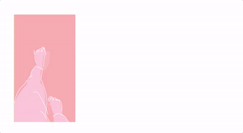
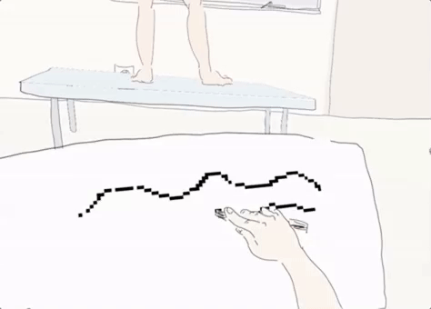
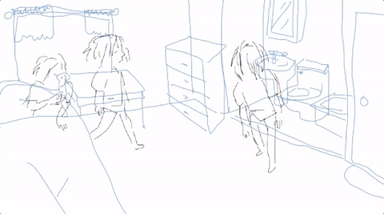
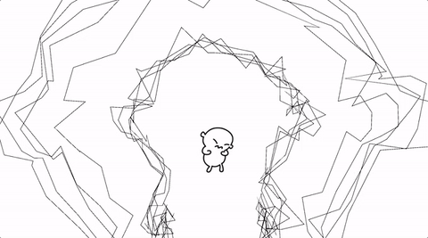
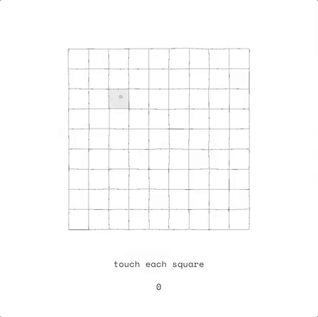

prototypes - 2017
made as a part of Bennett Foddy's Prototype Studio class at NYU Game Center.
We were given a short prompt and a week to make a game.
(they can be played
here)

FPS
A FPS game where each action is split. Made for the prompt "what kind of game do you hate the most?"

Figure Drawing
Based on a memory from when I was 20. Prompt was to make a fan game of a game with a female creator, I chose Nina Freeman's
Freshman Year.

Get Up
Use the keyboard to play through the motions of getting up. Made for the prompt "permanence/ephemerality".

Yelling
Yell until you can't anymore. Made for the prompt "your worst nightmare".

Sewing
Guide your mouse through the grid as it warps around you. Made for the (personalized) prompt "a game a robot cannot lose".
This game was further developed into a quilt game, playable
here.